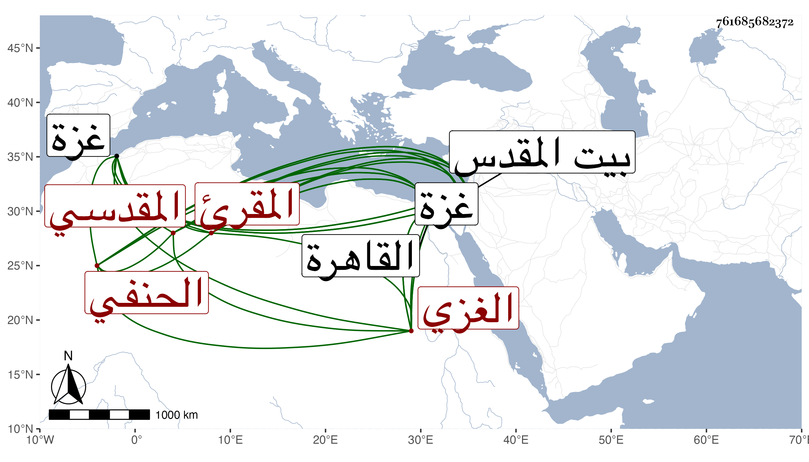

0902Sakhawi.DawLamic.ITO20230111-ara1.EIS1600.761685682372
Biography ID: 761685682372
202
محمد بن موسى بن عمران بن موسى بن سليمان الشمس الغزي ثم المقدسي الحنفي المقرئ والد المحمدين الماضيين ويعرف بابن عمران . ولد في نصف شعبان سنة أربع وتسعين وسبعمائة بغزة ونشأ بها فحفظ القرآن وكتبا واشتغل بالعلم ولازم ناصر الدين الأياسي في الفقه وغيره فانتفع به وأقبل على القراءات فتلا للسبع ما عدا حمزة ببيع المقدس على الشمس القباقبي بل وتلا عليه للأربعة عشر لكن إلى آخر المائدة خاصة بما تضمنته منظومته مجمع السرور التي سمعها من لفظه بعد أن قرأها عليه مرارا وكذا جمع للسبع على حبيب والتاج بن تمرية بعد أن تلا عليه لحمزة فقط وعلى أمير حاج الحلبي لكن إلى آخر قاف وبالعشر للزهراوين علي ابن الجزري بما تضمنه النشر والطيبة كلاهما له وذلك في سنة سبع وعشرين بالقاهرة وسمع عليه الطلبة بعد أن سمعها من حفيده جلال الدين وكذا سمع من الشمس غير ذلك كجزئه المشتمل على العشاريات والمسلسلات وغيرها ومن شيخنا في سنة أربع وثلاثين نغبة الظمآن لأبي حيان وغيرها ومن الفوى ختم صحيح مسلم وقرأ عليه التيسير فسمعه بقراءته جماعة منهم عبد الرحمن بن محمد بن إسماعيل الكركي الماضي وبرع في القراءات وتصدى لإقرائها وصار بأخرة عليه المعول فيها بتلك النواحي وحدث سمع منه الفضلاء سمعت منه وأخذ عنه جماعة ببلده وبيت المقدس والقاهرة وغيرها وانتفعوا به لديانته ونصحه وممن قرأ عليه المحب ابن الشحنة حين إقامته ببيت المقدس والكمال بن أبي شريف وارتحل إليه ناصر الدين الأخميمي فتلا عليه ومات قبل إكماله وهو هناك وذلك في يوم الأحد خامس رمضان سنة ثلاث وسبعين وصلي عليه من الغد ودفن بتربة ماملا بجوار عبد الله الزرعي رحمه الله وإيانا . ولعلي بن عبد الحمدي الغزي فيه :
| يا شمس علم بصبح العز قد طلعت | في برج سعد لها من عنصر الشرف |
| تيسير نشر الصبا من كل طيبة | حويت يا خير كنز المذهب الحنفي |
